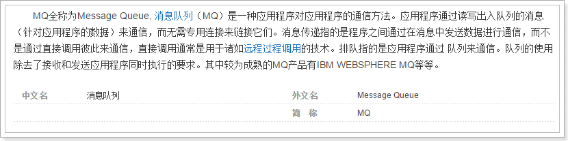
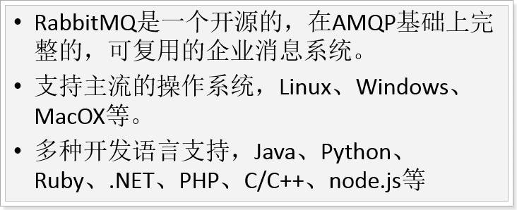
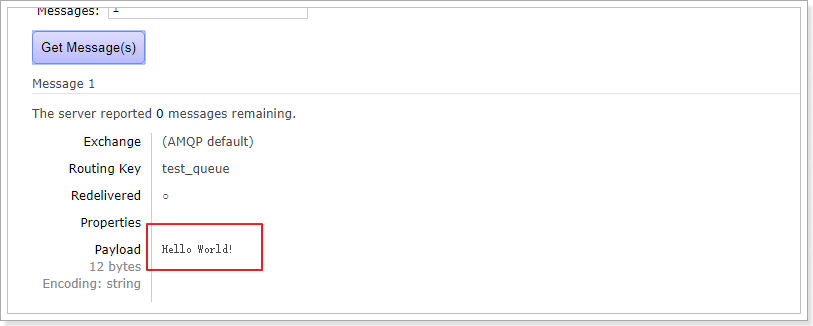
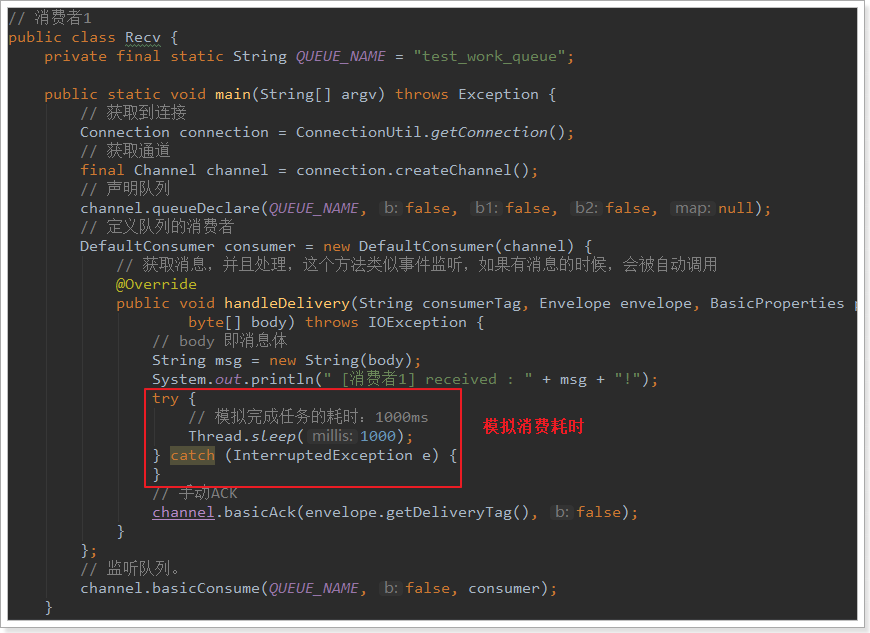
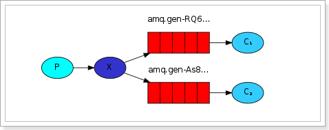
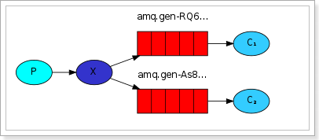

消息队列是解决数据同步的重要方式：
- 了解常见的MQ产品
- 了解RabbitMQ的5种消息模型
- 会使用Spring AMQP
- 利用MQ实现搜索和静态页的数据同步
1.RabbitMQ
1.1.搜索与商品服务的问题
目前我们已经完成了商品详情和搜索系统的开发。我们思考一下，是否存在问题？
- 商品的原始数据保存在数据库中，增删改查都在数据库中完成。
- 搜索服务数据来源是索引库，如果数据库商品发生变化，索引库数据不能及时更新。
- 商品详情做了页面静态化，静态页面数据也不会随着数据库商品发生变化。
如果我们在后台修改了商品的价格，搜索页面和商品详情页显示的依然是旧的价格，这样显然不对。该如何解决？
这里有两种解决方案：
- 方案1：每当后台对商品做增删改操作，同时要修改索引库数据及静态页面
- 方案2：搜索服务和商品页面服务对外提供操作接口，后台在商品增删改后，调用接口
以上两种方式都有同一个严重问题：就是代码耦合，后台服务中需要嵌入搜索和商品页面服务，违背了微服务的独立原则。
所以，我们会通过另外一种方式来解决这个问题：消息队列
1.2.消息队列（MQ）
1.2.1.什么是消息队列
消息队列，即MQ，Message Queue。

消息队列是典型的：生产者、消费者模型。生产者不断向消息队列中生产消息，消费者不断的从队列中获取消息。因为消息的生产和消费都是异步的，而且只关心消息的发送和接收，没有业务逻辑的侵入，这样就实现了生产者和消费者的解耦。
结合前面所说的问题：
- 商品服务对商品增删改以后，无需去操作索引库或静态页面，只是发送一条消息，也不关心消息被谁接收。
- 搜索服务和静态页面服务接收消息，分别去处理索引库和静态页面。
如果以后有其它系统也依赖商品服务的数据，同样监听消息即可，商品服务无需任何代码修改。
1.2.2.AMQP和JMS
MQ是消息通信的模型，并不是具体实现。现在实现MQ的有两种主流方式：AMQP、JMS。


两者间的区别和联系：
- JMS是定义了统一的接口，来对消息操作进行统一；AMQP是通过规定协议来统一数据交互的格式
- JMS限定了必须使用Java语言；AMQP只是协议，不规定实现方式，因此是跨语言的。
- JMS规定了两种消息模型；而AMQP的消息模型更加丰富
1.2.3.常见MQ产品

- ActiveMQ：基于JMS
- RabbitMQ：基于AMQP协议，erlang语言开发，稳定性好
- RocketMQ：基于JMS，阿里巴巴产品，目前交由Apache基金会
- Kafka：分布式消息系统，高吞吐量
1.2.4.RabbitMQ
RabbitMQ是基于AMQP的一款消息管理系统
官方教程：http://www.rabbitmq.com/getstarted.html

1.3.下载和安装
1.3.1.下载
官网下载地址：http://www.rabbitmq.com/download.html

目前最新版本是：3.7.5
我们的课程中使用的是：3.4.1版本
课前资料提供了安装包：
1.3.2.安装
详见课前资料中的：
2.五种消息模型
RabbitMQ提供了6种消息模型，但是第6种其实是RPC，并不是MQ，因此不予学习。那么也就剩下5种。
但是其实3、4、5这三种都属于订阅模型，只不过进行路由的方式不同。

我们通过一个demo工程来了解下RabbitMQ的工作方式：
导入工程：
导入后：
依赖：
<project xmlns="http://maven.apache.org/POM/4.0.0" xmlns:xsi="http://www.w3.org/2001/XMLSchema-instance"
xsi:schemaLocation="http://maven.apache.org/POM/4.0.0 http://maven.apache.org/xsd/maven-4.0.0.xsd">
<modelVersion>4.0.0</modelVersion>
<groupId>cn.itcast.rabbitmq</groupId>
<artifactId>itcast-rabbitmq</artifactId>
<version>0.0.1-SNAPSHOT</version>
<parent>
<groupId>org.springframework.boot</groupId>
<artifactId>spring-boot-starter-parent</artifactId>
<version>2.0.2.RELEASE</version>
</parent>
<properties>
<java.version>1.8</java.version>
</properties>
<dependencies>
<dependency>
<groupId>org.apache.commons</groupId>
<artifactId>commons-lang3</artifactId>
<version>3.3.2</version>
</dependency>
<dependency>
<groupId>org.springframework.boot</groupId>
<artifactId>spring-boot-starter-amqp</artifactId>
</dependency>
<dependency>
<groupId>org.springframework.boot</groupId>
<artifactId>spring-boot-starter-test</artifactId>
</dependency>
</dependencies>
</project>
我们抽取一个建立RabbitMQ连接的工具类，方便其他程序获取连接：
public class ConnectionUtil {
/**
* 建立与RabbitMQ的连接
* @return
* @throws Exception
*/
public static Connection getConnection() throws Exception {
//定义连接工厂
ConnectionFactory factory = new ConnectionFactory();
//设置服务地址
factory.setHost("192.168.56.101");
//端口
factory.setPort(5672);
//设置账号信息，用户名、密码、vhost
factory.setVirtualHost("/leyou");
factory.setUsername("leyou");
factory.setPassword("leyou");
// 通过工程获取连接
Connection connection = factory.newConnection();
return connection;
}
}
2.1.基本消息模型
官方介绍：
RabbitMQ是一个消息代理：它接受和转发消息。 你可以把它想象成一个邮局：当你把邮件放在邮箱里时，你可以确定邮差先生最终会把邮件发送给你的收件人。 在这个比喻中，RabbitMQ是邮政信箱，邮局和邮递员。
RabbitMQ与邮局的主要区别是它不处理纸张，而是接受，存储和转发数据消息的二进制数据块。

P（producer/ publisher）：生产者，一个发送消息的用户应用程序。
C（consumer）：消费者，消费和接收有类似的意思，消费者是一个主要用来等待接收消息的用户应用程序
队列（红色区域）：rabbitmq内部类似于邮箱的一个概念。虽然消息流经rabbitmq和你的应用程序，但是它们只能存储在队列中。队列只受主机的内存和磁盘限制，实质上是一个大的消息缓冲区。许多生产者可以发送消息到一个队列，许多消费者可以尝试从一个队列接收数据。
总之：
生产者将消息发送到队列，消费者从队列中获取消息，队列是存储消息的缓冲区。
我们将用Java编写两个程序;发送单个消息的生产者，以及接收消息并将其打印出来的消费者。我们将详细介绍Java API中的一些细节，这是一个消息传递的“Hello World”。
我们将调用我们的消息发布者（发送者）Send和我们的消息消费者（接收者）Recv。发布者将连接到RabbitMQ，发送一条消息，然后退出。
2.1.1.生产者发送消息
public class Send {
private final static String QUEUE_NAME = "simple_queue";
public static void main(String[] argv) throws Exception {
// 获取到连接以及mq通道
Connection connection = ConnectionUtil.getConnection();
// 从连接中创建通道，这是完成大部分API的地方。
Channel channel = connection.createChannel();
// 声明（创建）队列，必须声明队列才能够发送消息，我们可以把消息发送到队列中。
// 声明一个队列是幂等的 - 只有当它不存在时才会被创建
channel.queueDeclare(QUEUE_NAME, false, false, false, null);
// 消息内容
String message = "Hello World!";
channel.basicPublish("", QUEUE_NAME, null, message.getBytes());
System.out.println(" [x] Sent '" + message + "'");
//关闭通道和连接
channel.close();
connection.close();
}
}
控制台：
2.1.2.管理工具中查看消息
进入队列页面，可以看到新建了一个队列：simple_queue
点击队列名称，进入详情页，可以查看消息：

在控制台查看消息并不会将消息消费，所以消息还在。
2.1.3.消费者获取消息
public class Recv {
private final static String QUEUE_NAME = "simple_queue";
public static void main(String[] argv) throws Exception {
// 获取到连接
Connection connection = ConnectionUtil.getConnection();
// 创建通道
Channel channel = connection.createChannel();
// 声明队列
channel.queueDeclare(QUEUE_NAME, false, false, false, null);
// 定义队列的消费者
DefaultConsumer consumer = new DefaultConsumer(channel) {
// 获取消息，并且处理，这个方法类似事件监听，如果有消息的时候，会被自动调用
@Override
public void handleDelivery(String consumerTag, Envelope envelope, BasicProperties properties,
byte[] body) throws IOException {
// body 即消息体
String msg = new String(body);
System.out.println(" [x] received : " + msg + "!");
}
};
// 监听队列，第二个参数：是否自动进行消息确认。
channel.basicConsume(QUEUE_NAME, true, consumer);
}
}
控制台：
这个时候，队列中的消息就没了：
我们发现，消费者已经获取了消息，但是程序没有停止，一直在监听队列中是否有新的消息。一旦有新的消息进入队列，就会立即打印.
2.1.4.消息确认机制（ACK）
通过刚才的案例可以看出，消息一旦被消费者接收，队列中的消息就会被删除。
那么问题来了：RabbitMQ怎么知道消息被接收了呢？
如果消费者领取消息后，还没执行操作就挂掉了呢？或者抛出了异常？消息消费失败，但是RabbitMQ无从得知，这样消息就丢失了！
因此，RabbitMQ有一个ACK机制。当消费者获取消息后，会向RabbitMQ发送回执ACK，告知消息已经被接收。不过这种回执ACK分两种情况：
- 自动ACK：消息一旦被接收，消费者自动发送ACK
- 手动ACK：消息接收后，不会发送ACK，需要手动调用
大家觉得哪种更好呢？
这需要看消息的重要性：
- 如果消息不太重要，丢失也没有影响，那么自动ACK会比较方便
- 如果消息非常重要，不容丢失。那么最好在消费完成后手动ACK，否则接收消息后就自动ACK，RabbitMQ就会把消息从队列中删除。如果此时消费者宕机，那么消息就丢失了。
我们之前的测试都是自动ACK的，如果要手动ACK，需要改动我们的代码：
public class Recv2 {
private final static String QUEUE_NAME = "simple_queue";
public static void main(String[] argv) throws Exception {
// 获取到连接
Connection connection = ConnectionUtil.getConnection();
// 创建通道
final Channel channel = connection.createChannel();
// 声明队列
channel.queueDeclare(QUEUE_NAME, false, false, false, null);
// 定义队列的消费者
DefaultConsumer consumer = new DefaultConsumer(channel) {
// 获取消息，并且处理，这个方法类似事件监听，如果有消息的时候，会被自动调用
@Override
public void handleDelivery(String consumerTag, Envelope envelope, BasicProperties properties,
byte[] body) throws IOException {
// body 即消息体
String msg = new String(body);
System.out.println(" [x] received : " + msg + "!");
// 手动进行ACK
channel.basicAck(envelope.getDeliveryTag(), false);
}
};
// 监听队列，第二个参数false，手动进行ACK
channel.basicConsume(QUEUE_NAME, false, consumer);
}
}
注意到最后一行代码：
channel.basicConsume(QUEUE_NAME, false, consumer);
如果第二个参数为true，则会自动进行ACK；如果为false，则需要手动ACK。方法的声明：
2.1.4.1.自动ACK存在的问题
修改消费者，添加异常，如下：
生产者不做任何修改，直接运行，消息发送成功：
运行消费者，程序抛出异常。但是消息依然被消费：
管理界面：
2.1.4.2.演示手动ACK
修改消费者，把自动改成手动（去掉之前制造的异常）
生产者不变，再次运行：
运行消费者
但是，查看管理界面，发现：
停掉消费者的程序，发现：
这是因为虽然我们设置了手动ACK，但是代码中并没有进行消息确认！所以消息并未被真正消费掉。
当我们关掉这个消费者，消息的状态再次称为Ready
修改代码手动ACK：
执行：
消息消费成功！
2.2.work消息模型
工作队列或者竞争消费者模式

在第一篇教程中，我们编写了一个程序，从一个命名队列中发送并接受消息。在这里，我们将创建一个工作队列，在多个工作者之间分配耗时任务。
工作队列，又称任务队列。主要思想就是避免执行资源密集型任务时，必须等待它执行完成。相反我们稍后完成任务，我们将任务封装为消息并将其发送到队列。 在后台运行的工作进程将获取任务并最终执行作业。当你运行许多消费者时，任务将在他们之间共享，但是一个消息只能被一个消费者获取。
这个概念在Web应用程序中特别有用，因为在短的HTTP请求窗口中无法处理复杂的任务。
接下来我们来模拟这个流程：
P：生产者：任务的发布者
C1：消费者，领取任务并且完成任务，假设完成速度较快
C2：消费者2：领取任务并完成任务，假设完成速度慢
面试题：避免消息堆积？
1）采用workqueue，多个消费者监听同一队列。
2）接收到消息以后，而是通过线程池，异步消费。
2.2.1.生产者
生产者与案例1中的几乎一样：
public class Send {
private final static String QUEUE_NAME = "test_work_queue";
public static void main(String[] argv) throws Exception {
// 获取到连接
Connection connection = ConnectionUtil.getConnection();
// 获取通道
Channel channel = connection.createChannel();
// 声明队列
channel.queueDeclare(QUEUE_NAME, false, false, false, null);
// 循环发布任务
for (int i = 0; i < 50; i++) {
// 消息内容
String message = "task .. " + i;
channel.basicPublish("", QUEUE_NAME, null, message.getBytes());
System.out.println(" [x] Sent '" + message + "'");
Thread.sleep(i * 2);
}
// 关闭通道和连接
channel.close();
connection.close();
}
}
不过这里我们是循环发送50条消息。
2.2.2.消费者1

2.2.3.消费者2

与消费者1基本类似，就是没有设置消费耗时时间。
这里是模拟有些消费者快，有些比较慢。
接下来，两个消费者一同启动，然后发送50条消息：
可以发现，两个消费者各自消费了25条消息，而且各不相同，这就实现了任务的分发。
2.2.4.能者多劳
刚才的实现有问题吗？
- 消费者1比消费者2的效率要低，一次任务的耗时较长
- 然而两人最终消费的消息数量是一样的
- 消费者2大量时间处于空闲状态，消费者1一直忙碌
现在的状态属于是把任务平均分配，正确的做法应该是消费越快的人，消费的越多。
怎么实现呢？
我们可以使用basicQos方法和prefetchCount = 1设置。 这告诉RabbitMQ一次不要向工作人员发送多于一条消息。 或者换句话说，不要向工作人员发送新消息，直到它处理并确认了前一个消息。 相反，它会将其分派给不是仍然忙碌的下一个工作人员。
再次测试：

2.3.订阅模型分类
在之前的模式中，我们创建了一个工作队列。 工作队列背后的假设是：每个任务只被传递给一个工作人员。 在这一部分，我们将做一些完全不同的事情 - 我们将会传递一个信息给多个消费者。 这种模式被称为“发布/订阅”。
订阅模型示意图：

解读：
1、1个生产者，多个消费者
2、每一个消费者都有自己的一个队列
3、生产者没有将消息直接发送到队列，而是发送到了交换机
4、每个队列都要绑定到交换机
5、生产者发送的消息，经过交换机到达队列，实现一个消息被多个消费者获取的目的
X（Exchanges）：交换机一方面：接收生产者发送的消息。另一方面：知道如何处理消息，例如递交给某个特别队列、递交给所有队列、或是将消息丢弃。到底如何操作，取决于Exchange的类型。
Exchange类型有以下几种：
Fanout：广播，将消息交给所有绑定到交换机的队列
Direct：定向，把消息交给符合指定routing key 的队列
Topic：通配符，把消息交给符合routing pattern（路由模式） 的队列
我们这里先学习
Fanout：即广播模式
Exchange（交换机）只负责转发消息，不具备存储消息的能力，因此如果没有任何队列与Exchange绑定，或者没有符合路由规则的队列，那么消息会丢失！
2.4.订阅模型-Fanout
Fanout，也称为广播。
流程图：

在广播模式下，消息发送流程是这样的：
- 1） 可以有多个消费者
- 2） 每个消费者有自己的queue（队列）
- 3） 每个队列都要绑定到Exchange（交换机）
- 4） 生产者发送的消息，只能发送到交换机，交换机来决定要发给哪个队列，生产者无法决定。
- 5） 交换机把消息发送给绑定过的所有队列
- 6） 队列的消费者都能拿到消息。实现一条消息被多个消费者消费
2.4.1.生产者
两个变化：
- 1） 声明Exchange，不再声明Queue
- 2） 发送消息到Exchange，不再发送到Queue
public class Send {
private final static String EXCHANGE_NAME = "fanout_exchange_test";
public static void main(String[] argv) throws Exception {
// 获取到连接
Connection connection = ConnectionUtil.getConnection();
// 获取通道
Channel channel = connection.createChannel();
// 声明exchange，指定类型为fanout
channel.exchangeDeclare(EXCHANGE_NAME, "fanout");
// 消息内容
String message = "Hello everyone";
// 发布消息到Exchange
channel.basicPublish(EXCHANGE_NAME, "", null, message.getBytes());
System.out.println(" [生产者] Sent '" + message + "'");
channel.close();
connection.close();
}
}
2.4.2.消费者1
public class Recv {
private final static String QUEUE_NAME = "fanout_exchange_queue_1";
private final static String EXCHANGE_NAME = "fanout_exchange_test";
public static void main(String[] argv) throws Exception {
// 获取到连接
Connection connection = ConnectionUtil.getConnection();
// 获取通道
Channel channel = connection.createChannel();
// 声明队列
channel.queueDeclare(QUEUE_NAME, false, false, false, null);
// 绑定队列到交换机
channel.queueBind(QUEUE_NAME, EXCHANGE_NAME, "");
// 定义队列的消费者
DefaultConsumer consumer = new DefaultConsumer(channel) {
// 获取消息，并且处理，这个方法类似事件监听，如果有消息的时候，会被自动调用
@Override
public void handleDelivery(String consumerTag, Envelope envelope, BasicProperties properties,
byte[] body) throws IOException {
// body 即消息体
String msg = new String(body);
System.out.println(" [消费者1] received : " + msg + "!");
}
};
// 监听队列，自动返回完成
channel.basicConsume(QUEUE_NAME, true, consumer);
}
}
要注意代码中：队列需要和交换机绑定
2.4.3.消费者2
public class Recv2 {
private final static String QUEUE_NAME = "fanout_exchange_queue_2";
private final static String EXCHANGE_NAME = "fanout_exchange_test";
public static void main(String[] argv) throws Exception {
// 获取到连接
Connection connection = ConnectionUtil.getConnection();
// 获取通道
Channel channel = connection.createChannel();
// 声明队列
channel.queueDeclare(QUEUE_NAME, false, false, false, null);
// 绑定队列到交换机
channel.queueBind(QUEUE_NAME, EXCHANGE_NAME, "");
// 定义队列的消费者
DefaultConsumer consumer = new DefaultConsumer(channel) {
// 获取消息，并且处理，这个方法类似事件监听，如果有消息的时候，会被自动调用
@Override
public void handleDelivery(String consumerTag, Envelope envelope, BasicProperties properties,
byte[] body) throws IOException {
// body 即消息体
String msg = new String(body);
System.out.println(" [消费者2] received : " + msg + "!");
}
};
// 监听队列，手动返回完成
channel.basicConsume(QUEUE_NAME, true, consumer);
}
}
2.4.4.测试
我们运行两个消费者，然后发送1条消息：
2.5.订阅模型-Direct
有选择性的接收消息
在订阅模式中，生产者发布消息，所有消费者都可以获取所有消息。
在路由模式中，我们将添加一个功能 - 我们将只能订阅一部分消息。 例如，我们只能将重要的错误消息引导到日志文件（以节省磁盘空间），同时仍然能够在控制台上打印所有日志消息。
但是，在某些场景下，我们希望不同的消息被不同的队列消费。这时就要用到Direct类型的Exchange。
在Direct模型下，队列与交换机的绑定，不能是任意绑定了，而是要指定一个RoutingKey（路由key）
消息的发送方在向Exchange发送消息时，也必须指定消息的routing key。

P：生产者，向Exchange发送消息，发送消息时，会指定一个routing key。
X：Exchange（交换机），接收生产者的消息，然后把消息递交给 与routing key完全匹配的队列
C1：消费者，其所在队列指定了需要routing key 为 error 的消息
C2：消费者，其所在队列指定了需要routing key 为 info、error、warning 的消息
2.5.1.生产者
此处我们模拟商品的增删改，发送消息的RoutingKey分别是：insert、update、delete
public class Send {
private final static String EXCHANGE_NAME = "direct_exchange_test";
public static void main(String[] argv) throws Exception {
// 获取到连接
Connection connection = ConnectionUtil.getConnection();
// 获取通道
Channel channel = connection.createChannel();
// 声明exchange，指定类型为direct
channel.exchangeDeclare(EXCHANGE_NAME, "direct");
// 消息内容
String message = "商品新增了， id = 1001";
// 发送消息，并且指定routing key 为：insert ,代表新增商品
channel.basicPublish(EXCHANGE_NAME, "insert", null, message.getBytes());
System.out.println(" [商品服务：] Sent '" + message + "'");
channel.close();
connection.close();
}
}
2.5.2.消费者1
我们此处假设消费者1只接收两种类型的消息：更新商品和删除商品。
public class Recv {
private final static String QUEUE_NAME = "direct_exchange_queue_1";
private final static String EXCHANGE_NAME = "direct_exchange_test";
public static void main(String[] argv) throws Exception {
// 获取到连接
Connection connection = ConnectionUtil.getConnection();
// 获取通道
Channel channel = connection.createChannel();
// 声明队列
channel.queueDeclare(QUEUE_NAME, false, false, false, null);
// 绑定队列到交换机，同时指定需要订阅的routing key。假设此处需要update和delete消息
channel.queueBind(QUEUE_NAME, EXCHANGE_NAME, "update");
channel.queueBind(QUEUE_NAME, EXCHANGE_NAME, "delete");
// 定义队列的消费者
DefaultConsumer consumer = new DefaultConsumer(channel) {
// 获取消息，并且处理，这个方法类似事件监听，如果有消息的时候，会被自动调用
@Override
public void handleDelivery(String consumerTag, Envelope envelope, BasicProperties properties,
byte[] body) throws IOException {
// body 即消息体
String msg = new String(body);
System.out.println(" [消费者1] received : " + msg + "!");
}
};
// 监听队列，自动ACK
channel.basicConsume(QUEUE_NAME, true, consumer);
}
}
2.5.3.消费者2
我们此处假设消费者2接收所有类型的消息：新增商品，更新商品和删除商品。
public class Recv2 {
private final static String QUEUE_NAME = "direct_exchange_queue_2";
private final static String EXCHANGE_NAME = "direct_exchange_test";
public static void main(String[] argv) throws Exception {
// 获取到连接
Connection connection = ConnectionUtil.getConnection();
// 获取通道
Channel channel = connection.createChannel();
// 声明队列
channel.queueDeclare(QUEUE_NAME, false, false, false, null);
// 绑定队列到交换机，同时指定需要订阅的routing key。订阅 insert、update、delete
channel.queueBind(QUEUE_NAME, EXCHANGE_NAME, "insert");
channel.queueBind(QUEUE_NAME, EXCHANGE_NAME, "update");
channel.queueBind(QUEUE_NAME, EXCHANGE_NAME, "delete");
// 定义队列的消费者
DefaultConsumer consumer = new DefaultConsumer(channel) {
// 获取消息，并且处理，这个方法类似事件监听，如果有消息的时候，会被自动调用
@Override
public void handleDelivery(String consumerTag, Envelope envelope, BasicProperties properties,
byte[] body) throws IOException {
// body 即消息体
String msg = new String(body);
System.out.println(" [消费者2] received : " + msg + "!");
}
};
// 监听队列，自动ACK
channel.basicConsume(QUEUE_NAME, true, consumer);
}
}
2.5.4.测试
我们分别发送增、删、改的RoutingKey，发现结果：

2.6.订阅模型-Topic
Topic类型的Exchange与Direct相比，都是可以根据RoutingKey把消息路由到不同的队列。只不过Topic类型Exchange可以让队列在绑定Routing key 的时候使用通配符！
Routingkey 一般都是有一个或多个单词组成，多个单词之间以”.”分割，例如： item.insert
通配符规则：
`#`：匹配一个或多个词
`*`：匹配不多不少恰好1个词
举例：
`audit.#`：能够匹配`audit.irs.corporate` 或者 `audit.irs`
`audit.*`：只能匹配`audit.irs`

在这个例子中，我们将发送所有描述动物的消息。消息将使用由三个字（两个点）组成的routing key发送。路由关键字中的第一个单词将描述速度，第二个颜色和第三个种类：“
我们创建了三个绑定：Q1绑定了绑定键“* .orange.”，Q2绑定了“.*.rabbit”和“lazy.＃”。
Q1匹配所有的橙色动物。
Q2匹配关于兔子以及懒惰动物的消息。
练习，生产者发送如下消息，会进入那个队列：
quick.orange.rabbit Q1 Q2
lazy.orange.elephant
quick.orange.fox
lazy.pink.rabbit
quick.brown.fox
quick.orange.male.rabbit
orange
2.6.1.生产者
使用topic类型的Exchange，发送消息的routing key有3种： item.isnert、item.update、item.delete：
public class Send {
private final static String EXCHANGE_NAME = "topic_exchange_test";
public static void main(String[] argv) throws Exception {
// 获取到连接
Connection connection = ConnectionUtil.getConnection();
// 获取通道
Channel channel = connection.createChannel();
// 声明exchange，指定类型为topic
channel.exchangeDeclare(EXCHANGE_NAME, "topic");
// 消息内容
String message = "新增商品 : id = 1001";
// 发送消息，并且指定routing key 为：insert ,代表新增商品
channel.basicPublish(EXCHANGE_NAME, "item.insert", null, message.getBytes());
System.out.println(" [商品服务：] Sent '" + message + "'");
channel.close();
connection.close();
}
}
2.6.2.消费者1
我们此处假设消费者1只接收两种类型的消息：更新商品和删除商品
public class Recv {
private final static String QUEUE_NAME = "topic_exchange_queue_1";
private final static String EXCHANGE_NAME = "topic_exchange_test";
public static void main(String[] argv) throws Exception {
// 获取到连接
Connection connection = ConnectionUtil.getConnection();
// 获取通道
Channel channel = connection.createChannel();
// 声明队列
channel.queueDeclare(QUEUE_NAME, false, false, false, null);
// 绑定队列到交换机，同时指定需要订阅的routing key。需要 update、delete
channel.queueBind(QUEUE_NAME, EXCHANGE_NAME, "item.update");
channel.queueBind(QUEUE_NAME, EXCHANGE_NAME, "item.delete");
// 定义队列的消费者
DefaultConsumer consumer = new DefaultConsumer(channel) {
// 获取消息，并且处理，这个方法类似事件监听，如果有消息的时候，会被自动调用
@Override
public void handleDelivery(String consumerTag, Envelope envelope, BasicProperties properties,
byte[] body) throws IOException {
// body 即消息体
String msg = new String(body);
System.out.println(" [消费者1] received : " + msg + "!");
}
};
// 监听队列，自动ACK
channel.basicConsume(QUEUE_NAME, true, consumer);
}
}
2.6.3.消费者2
我们此处假设消费者2接收所有类型的消息：新增商品，更新商品和删除商品。
/**
* 消费者2
*/
public class Recv2 {
private final static String QUEUE_NAME = "topic_exchange_queue_2";
private final static String EXCHANGE_NAME = "topic_exchange_test";
public static void main(String[] argv) throws Exception {
// 获取到连接
Connection connection = ConnectionUtil.getConnection();
// 获取通道
Channel channel = connection.createChannel();
// 声明队列
channel.queueDeclare(QUEUE_NAME, false, false, false, null);
// 绑定队列到交换机，同时指定需要订阅的routing key。订阅 insert、update、delete
channel.queueBind(QUEUE_NAME, EXCHANGE_NAME, "item.*");
// 定义队列的消费者
DefaultConsumer consumer = new DefaultConsumer(channel) {
// 获取消息，并且处理，这个方法类似事件监听，如果有消息的时候，会被自动调用
@Override
public void handleDelivery(String consumerTag, Envelope envelope, BasicProperties properties,
byte[] body) throws IOException {
// body 即消息体
String msg = new String(body);
System.out.println(" [消费者2] received : " + msg + "!");
}
};
// 监听队列，自动ACK
channel.basicConsume(QUEUE_NAME, true, consumer);
}
}
2.7.持久化
如何避免消息丢失？
1） 消费者的ACK机制。可以防止消费者丢失消息。
2） 但是，如果在消费者消费之前，MQ就宕机了，消息就没了。
是可以将消息进行持久化呢？
要将消息持久化，前提是：队列、Exchange都持久化
2.7.1.交换机持久化

2.7.2.队列持久化
2.7.3.消息持久化
3.Spring AMQP
3.1.简介
Sprin有很多不同的项目，其中就有对AMQP的支持：

Spring AMQP的页面：http://spring.io/projects/spring-amqp

注意这里一段描述：

Spring-amqp是对AMQP协议的抽象实现，而spring-rabbit 是对协议的具体实现，也是目前的唯一实现。底层使用的就是RabbitMQ。
3.2.依赖和配置
添加AMQP的启动器：
<dependency>
<groupId>org.springframework.boot</groupId>
<artifactId>spring-boot-starter-amqp</artifactId>
</dependency>
在application.yml中添加RabbitMQ地址：
spring:
rabbitmq:
host: 192.168.56.101
username: leyou
password: leyou
virtual-host: /leyou
3.3.监听者
在SpringAmqp中，对消息的消费者进行了封装和抽象，一个普通的JavaBean中的普通方法，只要通过简单的注解，就可以成为一个消费者。
@Component
public class Listener {
@RabbitListener(bindings = @QueueBinding(
value = @Queue(value = "spring.test.queue", durable = "true"),
exchange = @Exchange(
value = "spring.test.exchange",
ignoreDeclarationExceptions = "true",
type = ExchangeTypes.TOPIC
),
key = {"#.#"}))
public void listen(String msg){
System.out.println("接收到消息：" + msg);
}
}
@Componet：类上的注解，注册到Spring容器@RabbitListener：方法上的注解，声明这个方法是一个消费者方法，需要指定下面的属性：bindings：指定绑定关系，可以有多个。值是@QueueBinding的数组。@QueueBinding包含下面属性：value：这个消费者关联的队列。值是@Queue，代表一个队列exchange：队列所绑定的交换机，值是@Exchange类型key：队列和交换机绑定的RoutingKey
类似listen这样的方法在一个类中可以写多个，就代表多个消费者。
3.4.AmqpTemplate
Spring最擅长的事情就是封装，把他人的框架进行封装和整合。
Spring为AMQP提供了统一的消息处理模板：AmqpTemplate，非常方便的发送消息，其发送方法：

红框圈起来的是比较常用的3个方法，分别是：
- 指定交换机、RoutingKey和消息体
- 指定消息
- 指定RoutingKey和消息，会向默认的交换机发送消息
3.5.测试代码
@RunWith(SpringRunner.class)
@SpringBootTest(classes = Application.class)
public class MqDemo {
@Autowired
private AmqpTemplate amqpTemplate;
@Test
public void testSend() throws InterruptedException {
String msg = "hello, Spring boot amqp";
this.amqpTemplate.convertAndSend("spring.test.exchange","a.b", msg);
// 等待10秒后再结束
Thread.sleep(10000);
}
}
运行后查看日志：
3.项目改造
接下来，我们就改造项目，实现搜索服务、商品静态页的数据同步。
3.1.思路分析
发送方：商品微服务
什么时候发？
当商品服务对商品进行写操作：增、删、改的时候，需要发送一条消息，通知其它服务。
发送什么内容？
对商品的增删改时其它服务可能需要新的商品数据，但是如果消息内容中包含全部商品信息，数据量太大，而且并不是每个服务都需要全部的信息。因此我们只发送商品id，其它服务可以根据id查询自己需要的信息。
接收方：搜索微服务、静态页微服务
接收消息后如何处理？
- 搜索微服务：
- 增/改：添加新的数据到索引库
- 删：删除索引库数据
- 静态页微服务：
- 增/改：创建新的静态页
- 删：删除原来的静态页
3.2.商品服务发送消息
我们先在商品微服务leyou-item-service中实现发送消息。
3.2.1.引入依赖
<dependency>
<groupId>org.springframework.boot</groupId>
<artifactId>spring-boot-starter-amqp</artifactId>
</dependency>
3.2.2.配置文件
我们在application.yml中添加一些有关RabbitMQ的配置：
spring:
rabbitmq:
host: 192.168.56.101
username: leyou
password: leyou
virtual-host: /leyou
template:
exchange: leyou.item.exchange
publisher-confirms: true
- template：有关
AmqpTemplate的配置- exchange：缺省的交换机名称，此处配置后，发送消息如果不指定交换机就会使用这个
- publisher-confirms：生产者确认机制，确保消息会正确发送，如果发送失败会有错误回执，从而触发重试
3.2.3.改造GoodsService
在GoodsService中封装一个发送消息到mq的方法：（需要注入AmqpTemplate模板）
private void sendMessage(Long id, String type){
// 发送消息
try {
this.amqpTemplate.convertAndSend("item." + type, id);
} catch (Exception e) {
logger.error("{}商品消息发送异常，商品id：{}", type, id, e);
}
}
这里没有指定交换机，因此默认发送到了配置中的：leyou.item.exchange
注意：这里要把所有异常都try起来，不能让消息的发送影响到正常的业务逻辑
然后在新增的时候调用：
修改的时候调用：

3.3.搜索服务接收消息
搜索服务接收到消息后要做的事情：
- 增：添加新的数据到索引库
- 删：删除索引库数据
- 改：修改索引库数据
因为索引库的新增和修改方法是合二为一的，因此我们可以将这两类消息一同处理，删除另外处理。
3.3.1.引入依赖
<dependency>
<groupId>org.springframework.boot</groupId>
<artifactId>spring-boot-starter-amqp</artifactId>
</dependency>
3.3.2.添加配置
spring:
rabbitmq:
host: 192.168.56.101
username: leyou
password: leyou
virtual-host: /leyou
这里只是接收消息而不发送，所以不用配置template相关内容。
3.3.3.编写监听器
代码：
@Component
public class GoodsListener {
@Autowired
private SearchService searchService;
/**
* 处理insert和update的消息
*
* @param id
* @throws Exception
*/
@RabbitListener(bindings = @QueueBinding(
value = @Queue(value = "leyou.create.index.queue", durable = "true"),
exchange = @Exchange(
value = "leyou.item.exchange",
ignoreDeclarationExceptions = "true",
type = ExchangeTypes.TOPIC),
key = {"item.insert", "item.update"}))
public void listenCreate(Long id) throws Exception {
if (id == null) {
return;
}
// 创建或更新索引
this.searchService.createIndex(id);
}
/**
* 处理delete的消息
*
* @param id
*/
@RabbitListener(bindings = @QueueBinding(
value = @Queue(value = "leyou.delete.index.queue", durable = "true"),
exchange = @Exchange(
value = "leyou.item.exchange",
ignoreDeclarationExceptions = "true",
type = ExchangeTypes.TOPIC),
key = "item.delete"))
public void listenDelete(Long id) {
if (id == null) {
return;
}
// 删除索引
this.searchService.deleteIndex(id);
}
}
3.3.4.编写创建和删除索引方法
这里因为要创建和删除索引，我们需要在SearchService中拓展两个方法，创建和删除索引：
public void createIndex(Long id) throws IOException {
Spu spu = this.goodsClient.querySpuById(id);
// 构建商品
Goods goods = this.buildGoods(spu);
// 保存数据到索引库
this.goodsRepository.save(goods);
}
public void deleteIndex(Long id) {
this.goodsRepository.deleteById(id);
}
创建索引的方法可以从之前导入数据的测试类中拷贝和改造。
3.4.静态页服务接收消息
商品静态页服务接收到消息后的处理：
- 增：创建新的静态页
- 删：删除原来的静态页
- 改：创建新的静态页并覆盖原来的
不过，我们编写的创建静态页的方法也具备覆盖以前页面的功能，因此：增和改的消息可以放在一个方法中处理，删除消息放在另一个方法处理。
3.4.1.引入依赖
<dependency>
<groupId>org.springframework.boot</groupId>
<artifactId>spring-boot-starter-amqp</artifactId>
</dependency>
3.4.2.添加配置
spring:
rabbitmq:
host: 192.168.56.101
username: leyou
password: leyou
virtual-host: /leyou
这里只是接收消息而不发送，所以不用配置template相关内容。
3.4.3.编写监听器
代码：
@Component
public class GoodsListener {
@Autowired
private GoodsHtmlService goodsHtmlService;
@RabbitListener(bindings = @QueueBinding(
value = @Queue(value = "leyou.create.web.queue", durable = "true"),
exchange = @Exchange(
value = "leyou.item.exchange",
ignoreDeclarationExceptions = "true",
type = ExchangeTypes.TOPIC),
key = {"item.insert", "item.update"}))
public void listenCreate(Long id) throws Exception {
if (id == null) {
return;
}
// 创建页面
goodsHtmlService.createHtml(id);
}
@RabbitListener(bindings = @QueueBinding(
value = @Queue(value = "leyou.delete.web.queue", durable = "true"),
exchange = @Exchange(
value = "leyou.item.exchange",
ignoreDeclarationExceptions = "true",
type = ExchangeTypes.TOPIC),
key = "item.delete"))
public void listenDelete(Long id) {
if (id == null) {
return;
}
// 删除页面
goodsHtmlService.deleteHtml(id);
}
}
3.4.4.添加删除页面方法
public void deleteHtml(Long id) {
File file = new File("C:\\project\\nginx-1.14.0\\html\\item\\", id + ".html");
file.deleteOnExit();
}
3.5.测试
3.5.1.查看RabbitMQ控制台
重新启动项目，并且登录RabbitMQ管理界面：http://192.168.56.101:15672
可以看到，交换机已经创建出来了：
队列也已经创建完毕：

并且队列都已经绑定到交换机：
3.5.2.修改数据试一试
在后台修改商品数据的价格，分别在搜索及商品详情页查看是否统一。